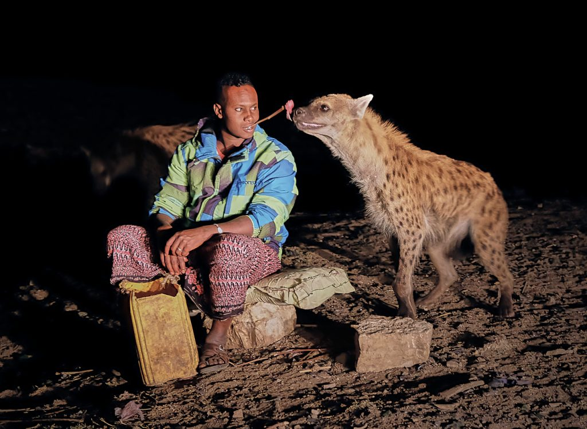
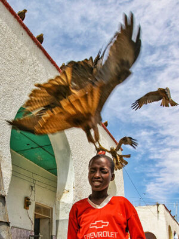
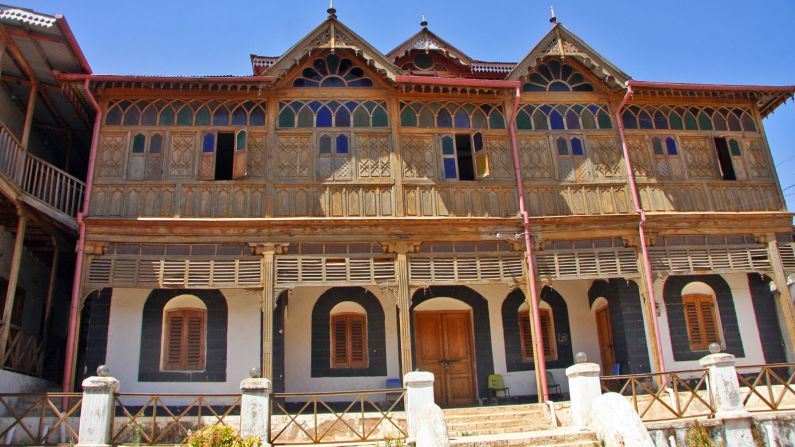

Discover the rich culture and vibrant life inside the ancient walls of Harar.
Jegol is the historical center of Harar, Ethiopia – a city known for its unique heritage, colorful culture, and traditional markets. Inside Jegol, the narrow alleyways are home to bustling bazaars where locals sell spices, baskets, coffee, and hand-made crafts. It’s a treasure of Harari tradition and a must-visit for those exploring Ethiopia's eastern charm.
Harar is world-famous for its tradition of feeding hyenas. Every night just outside the city walls, locals interact with wild hyenas in a peaceful display of coexistence. Visitors can even feed them by hand under the guidance of experienced locals.
In Harar, another striking tradition is the feeding of majestic eagles. Locals throw meat into the air as eagles swoop down from the sky in a spectacular display of power and grace. It’s a unique and unforgettable sight for tourists and bird lovers alike.
The Rambu Harari Museum showcases the rich heritage of the Harari people. From traditional clothing and household items to historical manuscripts and artwork, the museum gives deep insight into the culture and lifestyle of Harar’s residents.
